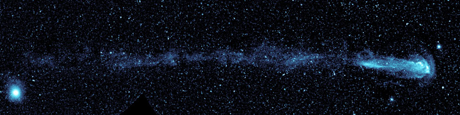

ภาพจากดาวเทียมกาเล็กซ์ของนาซา แสดงหางซึ่งเกิดจากสสารที่พ่นออกมาจากดาวมิรา
ดาวไมราคือจุดสีขาวที่อยู่ทางขวา กำลังเคลื่อนที่จากทางซ้ายของภาพมาทางขวา
จุดเล็กมากมายในพื้นหลังของภาพคือดาวดวงอื่นและดาราจักรอื่นที่อยู่ไกลออกไป
ดาวสว่างทางซ้ายเป็นดาวดวงอื่นที่อยู่ใกล้โลกมากกว่าดาวมิรา ภาพนี้ถ่ายไว้ระหว่างวันที่ 18
พฤศจิกายน ถึง 15 ธันวาคม 2549 (ภาพจาก NASA/JPL-Caltech)
ปัจจุบันดาวมิราเป็นดาวที่อายุมากจนใกล้สิ้นอายุขัยแล้ว
เป็นดาวที่ในทางฟิสิกส์ดาวฤกษ์เรียกว่าดาวกิ่งยักษ์แอซิมป์ทอติก มีสีแดงและพองบวมจนมีขนาดใหญ่มหึมา
หากนำดาวมิรามาวางแทนที่ดวงอาทิตย์ ขนาดของมันจะล้ำไปจนถึงวงโคจรของดาวอังคารเลยทีเดียว
คาดว่าดวงอาทิตย์ของเราก็จะกลายเป็นเช่นนี้ในอีกราวห้าพันล้านปีข้างหน้า
ดาวยักษ์แดงเช่นดาวมิรานี้จะพ่นมวลสารออกสู่อวกาศด้วยอัตราเร็วมาก
ประมาณว่าทุกสิบปีดาวจะพ่นสสารออกมาเท่ากับโลกทั้งดวง ดังนั้นตลอดเวลา 30,000
ปีที่ผ่านมาซึ่งเป็นอายุต่ำสุดของหางของมิรานี้ ดาวมิราได้พ่นสสารออกมาเท่ากับโลก 3,000 ดวง
หรือดาวพฤหัสบดี 9 ดวง
ดาวมิราเป็นดาวแปรแสงที่น่าสนใจที่สุดดวงหนึ่งบนท้องฟ้า เพราะมีคาบยาวถึง 332 วัน
และมีช่วงความสว่างต่างกันถึง 1,500 เท่า ในขณะนี้ดาวมิรายังมองไม่เห็น
แต่จะเริ่มเห็นได้ด้วยตาเปล่าในราวเดือนพฤศจิกายนปีนี้